Zrzuty ekranu
Kliknij zdjęcie, żeby je powiększyć. Między zdjęciami przechodzisz strzałkami albo przesuwając palcem.
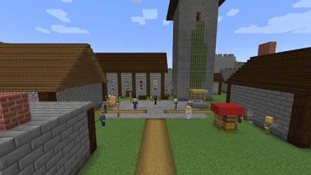
Dziedziniec zamku RedmontTu zaczyna się Dzień Wyboru. 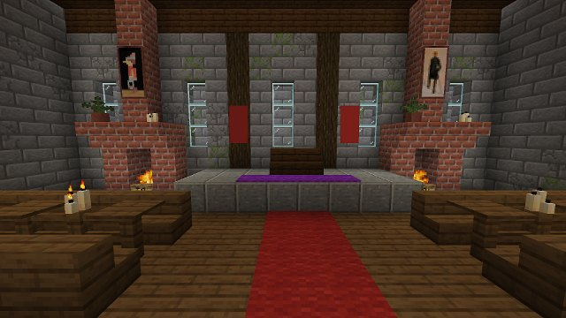
Wielka sala zamkuKominki, sztandary i portrety w sercu Redmontu. 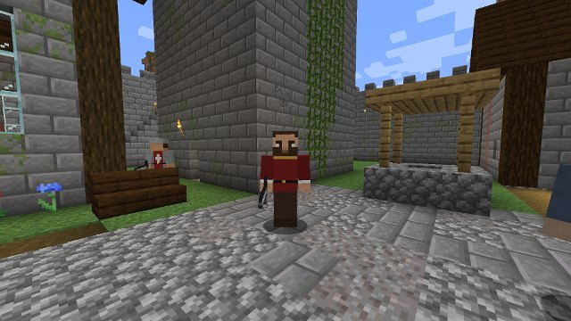
Baron AraldPan na Redmont i opiekun Willa. 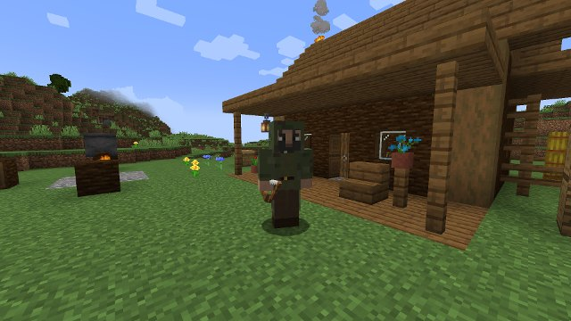
Halt przed chatą w lesieZwiadowca lenna Redmont i nauczyciel Willa. 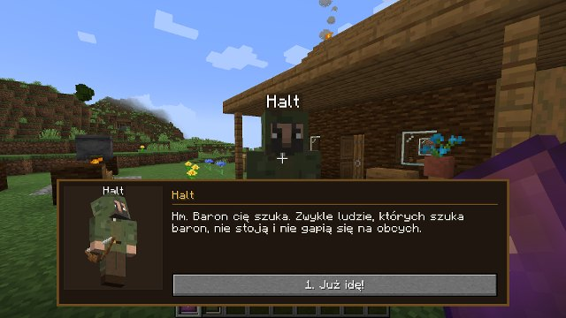
Rozmowa z HaltemDialogi z wyborem odpowiedzi prowadzą przez kampanię. 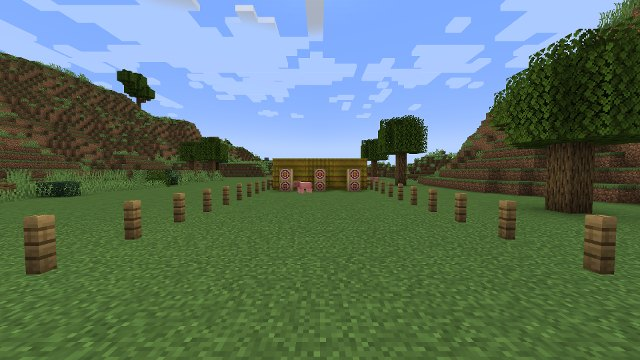
Strzelnica przy chacie HaltaTu Will uczy się strzelać z łuku. 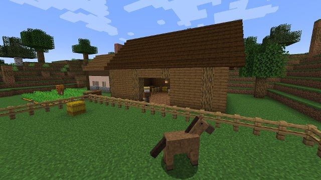
Farma Starego BobaStary Bob hoduje konie dla zwiadowców. 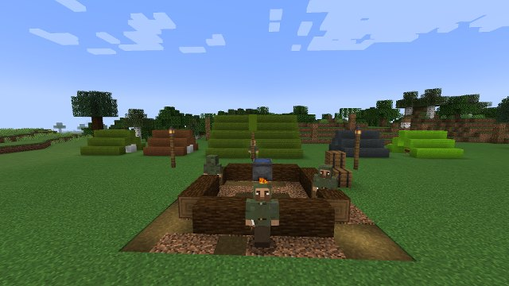
Obóz Zlotu ZwiadowcówZwiadowcy z całego królestwa przy wspólnym ognisku. 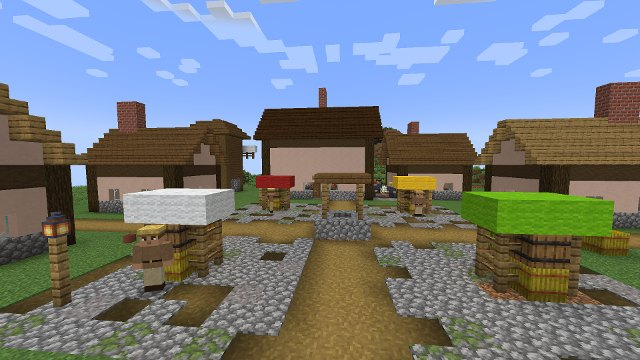
Jarmark w WensleyWioska z karczmą, kramami i misją poboczną. 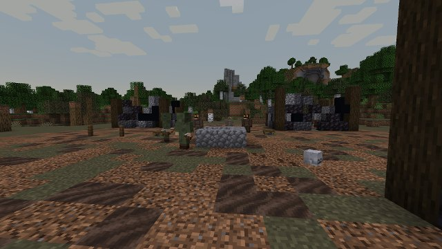
Zasadzka WargalówSpalona osada, a w niej Wargale Morgaratha. 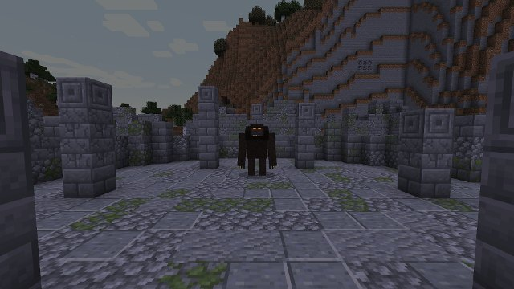
Kalkar w Ruinach GorlanuFinałowa walka na arenie wśród ruin. 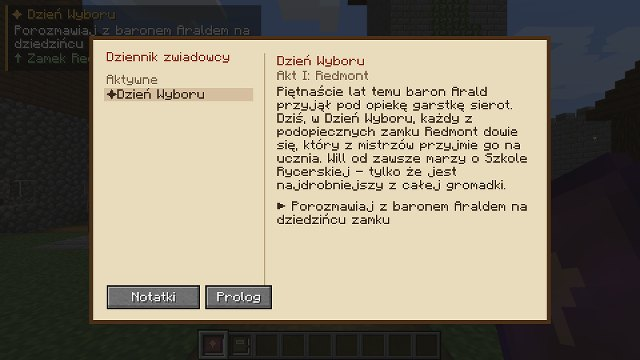
Dziennik zwiadowcyMisje, notatki i prolog zawsze pod ręką.